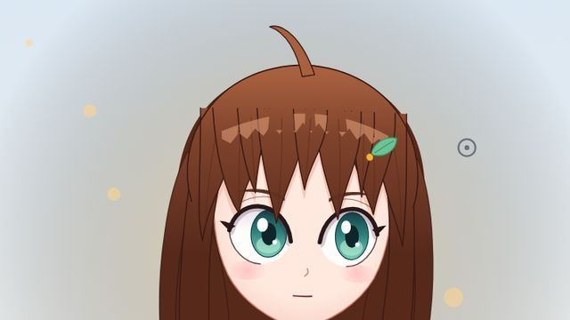
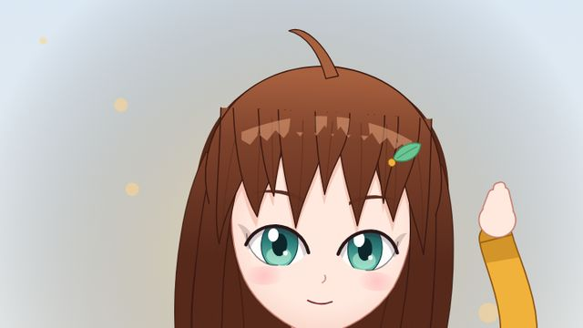
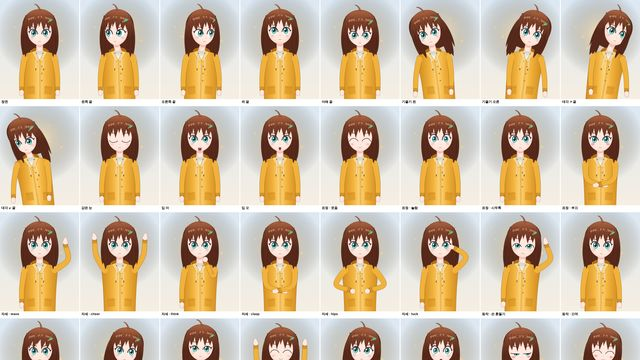
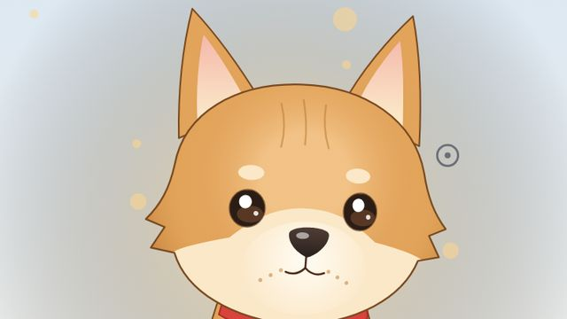
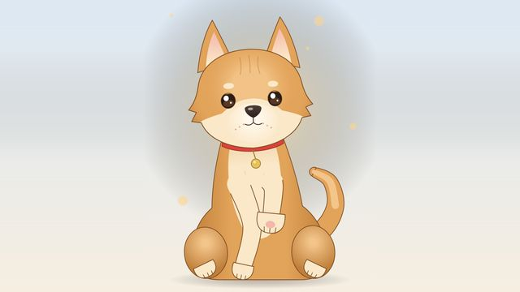
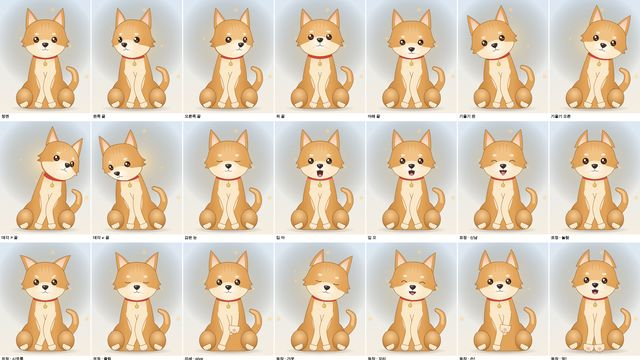

작업 흐름
- 입력
- 주제 하나 (예: "수줍은 바리스타", "우리 집 고양이 나비", "빵집 여우 마스코트")
- 브리프
- 종 · 구도 · 실루엣 · 색 · 흔들리는 부위 · 팔다리 자세 · 성격 · idle 동작 · 액션 · 표정 · 데모 순서
- 설계와 검사
- character.js에 새 캐릭터, 결정성 · 관절 한계 · 디딘 발 · 화면 안 검사, 좌우 끝까지 돌린 캐스트 시트
- 출력
- 포인터 · 터치 · 표정 · 동작 · 말하기가 되는 라이브 페이지, 한 파일 HTML, 캐스트 시트 PNG, 데모 MP4
node live-character/scripts/new-character.mjs my-cat --from bori
node live-character/scripts/check.mjs my-cat
node live-character/scripts/sheet.mjs my-cat # out/sheet.png
node live-character/scripts/render.mjs my-cat # out/demo.mp4요구 사항: Node 18+, Playwright(Chromium), ffmpeg. 단계별 순서는 SKILL.md에 있습니다.
샘플
사람 예제 하루와, 브리프에서 새로 설계한 동물 예제 보리입니다. 카드를 누르면 라이브 페이지(조작 가능)나 캐스트 시트가 열립니다.

사람 · 라이브 페이지하루포인터 따라보기 · 표정 5 · 동작 10 · 한글 립싱크

사람 · 데모 19초하루 데모따라보기 → 손 흔들며 인사 → 웃음 → 생각 → 만세 → 수줍

사람 · 캐스트 시트하루 32컷좌우 끝 · 기울기 · 표정 · 자세 6 · 동작 10

동물 · 라이브 페이지보리귀 · 말린 꼬리 · 이름표가 체인으로, 앞발은 땅에 고정

동물 · 데모 18초보리 데모따라보기 → 갸웃 → 멍멍 → 손! → 신남 → 쓰담 → 졸림

동물 · 캐스트 시트보리 25컷좌우 끝 · 기울기 · 표정 · 손! · 동작 8
실제 작품
이 스킬은 이 레포에서 만들었습니다. 움직임의 원리는 아래 원본 레포를 연구한 것이고, 캐릭터 그림은 쓰지 않았습니다.
링크
- SKILL.md 워크플로
- 폴더 lib · scripts · references · examples
- README.md 빠른 시작
- references/BRIEF.md 주제 → 브리프, 스틸 검토
- references/CHARACTER.md 캐릭터 계약과 부품 키트
- references/MOTION.md 움직임 레시피와 수치, 성격
- references/BODY-CHECK.md 방향 · 관절 · 캐스트 시트
- references/LESSONS.md 겪은 문제와 해결